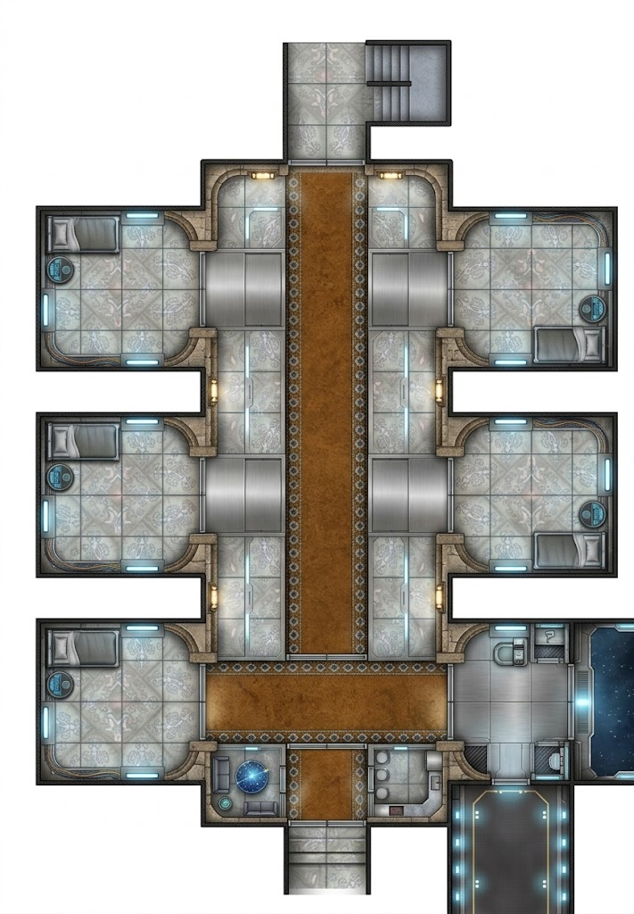

The guest wing of Varga's fortress on Takodana — eight rooms arranged along a central corridor, with a south foyer connecting to the fortress interior. The rooms are functional, not luxurious — better than a bunk on a freighter, worse than a mid-range hotel on Corellia. The fortress provides them to visiting delegations, business contacts, and anyone Varga wants close enough to watch. The heroes have been assigned quarters here during their time in the court. It feels safe. That's the problem.
Eight guest rooms, four per side, flanking a central corridor. Each room has two beds, a refresher alcove, and a single arched door with an electronic lock. The rooms are small — close quarters, limited sightlines, tight spaces between the beds and walls. At night, the glow-panels dim to their lowest setting, and the blue baseboard strips are the only light.
Rust-brown carpet over stone. Absorbs footsteps. Wide enough for two abreast but not comfortably. Arched doorways on both sides, warm amber sconces between them. At night, the corridor is a tunnel of dim light and deep shadow — you can see from end to end, but you can't see into the doorways until you're standing in them.
The corridor opens south into a wider space with polished stone flooring and a holographic display terminal cycling a fortress map. Higher ceiling, different acoustics. Two exits: south into the fortress interior, southeast into a service corridor. A comm terminal alcove sits against the west wall.
The service corridor in the southeast leads to the fortress's working levels — lower ceiling, bare durasteel, blue-white floor guides. This is how staff and maintenance droids move through the building. A utility alcove near the junction holds environmental controls and a droid charging station.
The fortress never stops humming — generators, environmental systems, the low throb of power running through stone walls. At night, the corridor is silent except for the periodic creak of settling architecture and the drip of condensation from the jungle outside. The carpet eats footsteps. The electronic door locks click when they cycle — a small, precise sound that carries in the silence.
Glow-panels dim to low amber at night. Blue baseboard strips provide navigation-level light — enough to see shapes, not faces. The holographic display in the south foyer casts a cold blue glow that pulses as the map rotates. The service corridor has floor-level guide lights that throw shadows upward.
Chemical sanitizer from the refresher alcoves. The faint ozone of electronic systems. Moisture in the lower rooms from the fortress drainage. The rust-brown carpet smells of dust and old fabric softener. In the service corridor, the air is drier and carries the tang of heavy electrical equipment.
The upper rooms are temperate — climate-controlled, comfortable. The lower rooms are warmer and more humid, closer to the fortress infrastructure. The service corridor is cooler and drier. The stone walls radiate a chill that seeps through bare feet on tile. The carpet in the corridor is warmer underfoot — a small mercy in the dark.